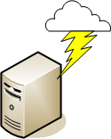

Up To: Contents
Up To: Contents
 See Also: State Types, Host Checks, Service Checks
See Also: State Types, Host Checks, Service Checks
Introduction
Event handlers are optional system commands (scripts or executables) that are run whenever a host or service state change occurs.
An obvious use for event handlers is the ability for Nagios to proactively fix problems before anyone is notified. Some other uses for event handlers include:
* Cycling power on a host that is experiencing problems with an auomated script should not be implemented lightly. Consider the consequences of this carefully before implementing automatic reboots. :-)
When Are Event Handlers Executed?
Event handlers are executed when a service or host:
SOFT and HARD states are described in detail here .
Event Handler Types
There are different types of optional event handlers that you can define to handle host and state changes:
Global host and service event handlers are run for every host or service state change that occurs, immediately prior to any host- or service-specific event handler that may be run. You can specify global event handler commands by using the global_host_event_handler and global_service_event_handler options in your main configuration file.
Individual hosts and services can have their own event handler command that should be run to handle state changes. You can specify an event handler that should be run by using the event_handler directive in your host and service definitions. These host- and service-specific event handlers are executed immediately after the (optional) global host or service event handler is executed.
Enabling Event Handlers
Event handlers can be enabled or disabled on a program-wide basis by using the enable_event_handlers in your main configuration file.
Host- and service-specific event handlers can be enabled or disabled by using the event_handler_enabled directive in your host and service definitions. Host- and service-specific event handlers will not be executed if the global enable_event_handlers option is disabled.
Event Handler Execution Order
As already mentioned, global host and service event handlers are executed immediately before host- or service-specific event handlers.
Event handlers are executed for HARD problem and recovery states immediately after notifications are sent out.
Writing Event Handler Commands
Event handler commands will likely be shell or perl scripts, but they can be any type of executable that can run from a command prompt. At a minimum, the scripts should take the following macros as arguments:
For Services: $SERVICESTATE$, $SERVICESTATETYPE$, $SERVICEATTEMPT$
For Hosts: $HOSTSTATE$, $HOSTSTATETYPE$, $HOSTATTEMPT$
The scripts should examine the values of the arguments passed to it and take any necessary action based upon those values. The best way to understand how event handlers work is to see an example. Lucky for you, one is provided below.
 Tip: Additional sample event handler scripts can be found in the contrib/eventhandlers/ subdirectory of the Nagios distribution. Some of these sample scripts demonstrate the use of external commands to implement a redundant and distributed monitoring environments.
Tip: Additional sample event handler scripts can be found in the contrib/eventhandlers/ subdirectory of the Nagios distribution. Some of these sample scripts demonstrate the use of external commands to implement a redundant and distributed monitoring environments.
Permissions For Event Handler Commands
Event handler commands will normally execute with the same permissions as the user under which Nagios is running on your machine. This can present a problem if you want to write an event handler that restarts system services, as root privileges are generally required to do these sorts of tasks.
Ideally you should evaluate the types of event handlers you will be implementing and grant just enough permissions to the Nagios user for executing the necessary system commands. You might want to try using sudo to accomplish this.
Service Event Handler Example
The example below assumes that you are monitoring the HTTP server on the local machine and have specified restart-httpd as the event handler command for the HTTP service definition. Also, I will be assuming that you have set the max_check_attempts option for the service to be a value of 4 or greater (i.e. the service is checked 4 times before it is considered to have a real problem). An abbreviated example service definition might look like this...
define service{
host_name somehost
service_description HTTP
max_check_attempts 4
event_handler restart-httpd
...
}
Once the service has been defined with an event handler, we must define that event handler as a command. An example command definition for restart-httpd is shown below. Notice the macros in the command line that I am passing to the event handler script - these are important!
define command{
command_name restart-httpd
command_line /usr/local/nagios/libexec/eventhandlers/restart-httpd $SERVICESTATE$ $SERVICESTATETYPE$ $SERVICEATTEMPT$
}
Now, let's actually write the event handler script (this is the /usr/local/nagios/libexec/eventhandlers/restart-httpd script).
#!/bin/sh # # Event handler script for restarting the web server on the local machine # # Note: This script will only restart the web server if the service is # retried 3 times (in a "soft" state) or if the web service somehow # manages to fall into a "hard" error state. # # What state is the HTTP service in? case "$1" in OK) # The service just came back up, so don't do anything... ;; WARNING) # We don't really care about warning states, since the service is probably still running... ;; UNKNOWN) # We don't know what might be causing an unknown error, so don't do anything... ;; CRITICAL) # Aha! The HTTP service appears to have a problem - perhaps we should restart the server... # Is this a "soft" or a "hard" state? case "$2" in # We're in a "soft" state, meaning that Nagios is in the middle of retrying the # check before it turns into a "hard" state and contacts get notified... SOFT) # What check attempt are we on? We don't want to restart the web server on the first # check, because it may just be a fluke! case "$3" in # Wait until the check has been tried 3 times before restarting the web server. # If the check fails on the 4th time (after we restart the web server), the state # type will turn to "hard" and contacts will be notified of the problem. # Hopefully this will restart the web server successfully, so the 4th check will # result in a "soft" recovery. If that happens no one gets notified because we # fixed the problem! 3) echo -n "Restarting HTTP service (3rd soft critical state)..." # Call the init script to restart the HTTPD server /etc/rc.d/init.d/httpd restart ;; esac ;; # The HTTP service somehow managed to turn into a hard error without getting fixed. # It should have been restarted by the code above, but for some reason it didn't. # Let's give it one last try, shall we? # Note: Contacts have already been notified of a problem with the service at this # point (unless you disabled notifications for this service) HARD) echo -n "Restarting HTTP service..." # Call the init script to restart the HTTPD server /etc/rc.d/init.d/httpd restart ;; esac ;; esac exit 0
The sample script provided above will attempt to restart the web server on the local machine in two different instances:
The script should theoretically restart and web server and fix the problem before the service goes into a HARD problem state, but we include a fallback case in the event it doesn't work the first time. It should be noted that the event handler will only be executed the first time that the service falls into a HARD problem state. This prevents Nagios from continuously executing the script to restart the web server if the service remains in a HARD problem state. You don't want that. :-)
That's all there is to it! Event handlers are pretty simple to write and implement, so give it a try and see what you can do.